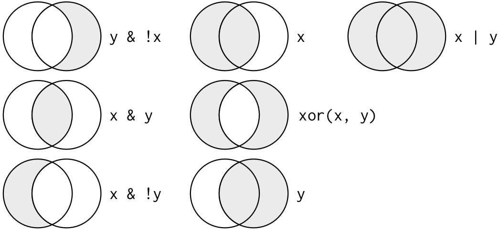

2.3 Data Filtering
The function filter() from the dplyr package lets you use a logical test to extract specific rows from a data frame. To use filter(), pass it the data frame followed by one or more logical tests. filter() will return every row that passes each logical test.
So for example, we can use filter() to select every car in mpg that was made by Audi in 2008, as shown below:
## # A tibble: 9 × 11
## manufacturer model displ year cyl trans drv cty hwy fl class
## <chr> <chr> <dbl> <int> <int> <chr> <chr> <int> <int> <chr> <chr>
## 1 audi a4 2 2008 4 manua… f 20 31 p comp…
## 2 audi a4 2 2008 4 auto(… f 21 30 p comp…
## 3 audi a4 3.1 2008 6 auto(… f 18 27 p comp…
## 4 audi a4 quattro 2 2008 4 manua… 4 20 28 p comp…
## 5 audi a4 quattro 2 2008 4 auto(… 4 19 27 p comp…
## 6 audi a4 quattro 3.1 2008 6 auto(… 4 17 25 p comp…
## 7 audi a4 quattro 3.1 2008 6 manua… 4 15 25 p comp…
## 8 audi a6 quattro 3.1 2008 6 auto(… 4 17 25 p mids…
## 9 audi a6 quattro 4.2 2008 8 auto(… 4 16 23 p mids…Like all dplyr functions, filter() returns a new data frame for you to save or use. It doesn’t overwrite the old data frame.
If you want to save the output of filter(), you’ll need to use the assignment operator, <-.
This time, we’ll re-run the same filter() command as above, but arrange the code just a little to save the output to an object named audi_2008.
## # A tibble: 9 × 11
## manufacturer model displ year cyl trans drv cty hwy fl class
## <chr> <chr> <dbl> <int> <int> <chr> <chr> <int> <int> <chr> <chr>
## 1 audi a4 2 2008 4 manua… f 20 31 p comp…
## 2 audi a4 2 2008 4 auto(… f 21 30 p comp…
## 3 audi a4 3.1 2008 6 auto(… f 18 27 p comp…
## 4 audi a4 quattro 2 2008 4 manua… 4 20 28 p comp…
## 5 audi a4 quattro 2 2008 4 auto(… 4 19 27 p comp…
## 6 audi a4 quattro 3.1 2008 6 auto(… 4 17 25 p comp…
## 7 audi a4 quattro 3.1 2008 6 manua… 4 15 25 p comp…
## 8 audi a6 quattro 3.1 2008 6 auto(… 4 17 25 p mids…
## 9 audi a6 quattro 4.2 2008 8 auto(… 4 16 23 p mids…Did you notice that this code used the double equal operator, ==? == is one of R’s logical comparison operators. Comparison operators are key to using filter(), so let’s take a look at them.
2.3.1 Comparison Operators
R provides a suite of comparison operators that you can use to compare values: >, >=, <, <=, != (not equal), and == (equal). Each creates a logical test. For example, is pi greater than three? We can ask R is that is true.
## [1] TRUESince pi is greater than 3, R will compute that logical test as TRUE (one of several boolean values…more on those in a minute).
When you place a logical test inside of filter(), filter applies the test to each row in the data frame and then returns the rows that pass, as a new data frame.
Our code above returned every row whose manufacturer value was "audi" and whose manufacturing year was 2008.
Be Careful!
When you start out with R, the easiest mistake to make is to test for equality with = instead of ==. When this happens you’ll get an informative error:
Multiple Tests & Boolean Operators
If you give filter() more than one logical test, filter() will combine the tests with an implied “and”. In other words, filter() will return only the rows that return TRUE for every test.
You can combine tests in other ways with Boolean operators
R uses Boolean operators to combine multiple logical comparisons into a single logical test. These include & (and), | (or), ! (not or negation), and xor() (exactly or).
Both | and xor() will return TRUE if one or the other logical comparison returns TRUE. xor() differs from | in that it will return FALSE if both logical comparisons return TRUE. The name xor stands for “exactly or”.
Study the diagram below to get a feel for how these operators work.

In the figure above, x is the left-hand circle, y is the right-hand circle, and the shaded region show which parts each command selects.
2.3.1.1 Common Mistake: Incomplete Boolean Operators
In R, the order of operations doesn’t work like English. You can’t write:
Even though in your head you might say “finds all cars made in 1999 or 2000”, R does not understand multiple comparisons in the same way. Be sure to write out a complete test on each side of a Boolean operator. To fix the above example, we would enter the following:
2.3.1.1.1 Helpful Tips with Logic Tests and Boolean Operators
- A useful short-hand for the above problem is
x %in% y. This will select every row where x is one of the values in y. We could use it to rewrite the code in the question above:
## # A tibble: 117 × 11
## manufacturer model displ year cyl trans drv cty hwy fl class
## <chr> <chr> <dbl> <int> <int> <chr> <chr> <int> <int> <chr> <chr>
## 1 audi a4 1.8 1999 4 auto… f 18 29 p comp…
## 2 audi a4 1.8 1999 4 manu… f 21 29 p comp…
## 3 audi a4 2.8 1999 6 auto… f 16 26 p comp…
## 4 audi a4 2.8 1999 6 manu… f 18 26 p comp…
## 5 audi a4 quattro 1.8 1999 4 manu… 4 18 26 p comp…
## 6 audi a4 quattro 1.8 1999 4 auto… 4 16 25 p comp…
## 7 audi a4 quattro 2.8 1999 6 auto… 4 15 25 p comp…
## 8 audi a4 quattro 2.8 1999 6 manu… 4 17 25 p comp…
## 9 audi a6 quattro 2.8 1999 6 auto… 4 15 24 p mids…
## 10 chevrolet c1500 sub… 5.7 1999 8 auto… r 13 17 r suv
## # ℹ 107 more rows- Sometimes you can simplify complicated sub-setting by remembering De Morgan’s law:
!(x & y)is the same as!x | !y!(x | y)is the same as!x & !y
For example, if you wanted to find cars with less than 6 cylinders and had engines less than 2 liters, you could use either of the following two filters:
## # A tibble: 22 × 11
## manufacturer model displ year cyl trans drv cty hwy fl class
## <chr> <chr> <dbl> <int> <int> <chr> <chr> <int> <int> <chr> <chr>
## 1 audi a4 1.8 1999 4 auto… f 18 29 p comp…
## 2 audi a4 1.8 1999 4 manu… f 21 29 p comp…
## 3 audi a4 quattro 1.8 1999 4 manu… 4 18 26 p comp…
## 4 audi a4 quattro 1.8 1999 4 auto… 4 16 25 p comp…
## 5 honda civic 1.6 1999 4 manu… f 28 33 r subc…
## 6 honda civic 1.6 1999 4 auto… f 24 32 r subc…
## 7 honda civic 1.6 1999 4 manu… f 25 32 r subc…
## 8 honda civic 1.6 1999 4 manu… f 23 29 p subc…
## 9 honda civic 1.6 1999 4 auto… f 24 32 r subc…
## 10 honda civic 1.8 2008 4 manu… f 26 34 r subc…
## # ℹ 12 more rows## # A tibble: 22 × 11
## manufacturer model displ year cyl trans drv cty hwy fl class
## <chr> <chr> <dbl> <int> <int> <chr> <chr> <int> <int> <chr> <chr>
## 1 audi a4 1.8 1999 4 auto… f 18 29 p comp…
## 2 audi a4 1.8 1999 4 manu… f 21 29 p comp…
## 3 audi a4 quattro 1.8 1999 4 manu… 4 18 26 p comp…
## 4 audi a4 quattro 1.8 1999 4 auto… 4 16 25 p comp…
## 5 honda civic 1.6 1999 4 manu… f 28 33 r subc…
## 6 honda civic 1.6 1999 4 auto… f 24 32 r subc…
## 7 honda civic 1.6 1999 4 manu… f 25 32 r subc…
## 8 honda civic 1.6 1999 4 manu… f 23 29 p subc…
## 9 honda civic 1.6 1999 4 auto… f 24 32 r subc…
## 10 honda civic 1.8 2008 4 manu… f 26 34 r subc…
## # ℹ 12 more rowsIn addition to
&and|, R also has&&and||. Do not use them withfilter()!Whenever you start using complicated, multi-part expressions in
filter(), consider making them explicit variables instead. This makes it much simpler to check your work.